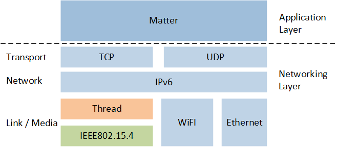
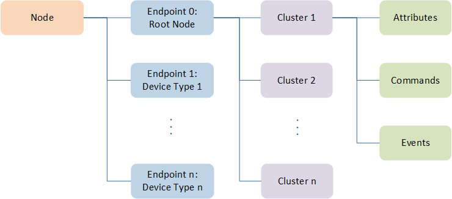
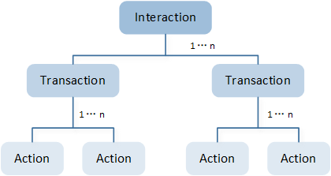
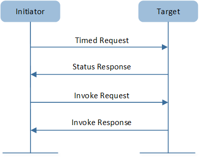

Matter 协议
Matter 是一个统一的开源应用层连接标准，旨在使开发人员和设备制造商能够连接并构建可靠、安全的生态系统，并提高联网家庭设备之间的兼容性。
术语和概念
Matter 协议定义了部署在设备上的应用层以及不同的链路层，用于辅助和维护不同层次的互操作性。下图展示了常见操作的调用协议栈。
{kind=link}

Matter 整体架构
Matter 协议栈分为应用层、传输层、网络层、链路/物理层。应用层兼容各种智能家居生态系统，使不同厂商的设备能够无缝协作。传输层和网络层处理设备间的通信。物理和链路层包括了当前主流的无线标准，如 Thread、Wi-Fi 和以太网（Ethernet）。
Thread 是一种安全的无线 Mesh 网络协议，基于 IEEE 802.15.4 标准。Wi-Fi 是一种基于 IEEE 802.11 标准的无线网络协议，通常用于建立设备间的局域网和提供互联网访问。以太网则是一种基于 IEEE 802.3 标准的有线网络技术。
层级说明
Matter 使用分层架构分离不同的职责，并且在不同的协议栈之间进行了良好的封装。大部分的交互都会经过下面图中的层级。

Matter 分层架构
各层级说明如下：
层级 |
说明 |
|---|---|
Application Layer |
设备的高阶业务逻辑，如照明应用的开/关灯泡及控制颜色的功能。 |
Data Model |
定义应用程序的数据模型及动作（Action），应用程序将使用这些数据与设备进行互操作。 |
Interaction Model |
定义了一系列客户端设备与服务端设备进行的交互，例如，读或写服务设备的属性时的设备行为。这些交互作用于 Data Model 层定义的元素。 |
Action Framing |
一旦使用 Interaction Model 构造了一个 Action，Action 将被序列化为规定的压缩二进制格式，以便进行编码以用于网络传输。 |
Security |
经过编码的 Action 帧再由 Security Layer 处理，消息会被加密并附加消息身份验证码。这些处理确保消息发送方和接收方之间的数据的机密性和真实性。 |
Message Framing & Routing |
当交互被序列化、加密和签名时，Message Layer 使用必需和可选的头字段构造 Payload 格式，其中头字段规定消息的属性以及逻辑路由信息。 |
IP Framing & Transport Management |
当 Payload 被 Message Layer 层构造后，会使用基于 IP 的数据传输协议。 |
下面详细介绍了数据模型、交互模型和安全三个层级的内容和功能。
数据模型
Matter 数据模型描述了 Matter 网络中数据元素的层次化封装，包括节点（Node）、端点（Endpoint）和集群（Cluster）等，各部分说明如下：

数据模型
节点
一个节点封装了网络上一个可寻址的、唯一的资源。该资源具有一组功能和能力，用户可以清楚地将其识别为一个功能整体，并与其他节点区别开。这种区别通常是物理的，比如物理设备本身，或者物理设备的逻辑实例。节点是数据模型中最高或者最外层的第一级元素，也是数据模型中最外层唯一可寻址的元素。
端点
一个节点由一个或多个端点组成，一个端点就是由设备类型指示的服务或虚拟设备的一个实例。每个端点都遵从一个或多个设备类型的定义，而这些又定义了端点支持的集群。
集群
集群是在端点上实例化的对象类。每个集群都由一个集群规范定义，集群的元素包括：
属性（Attribute）
事件（Event）
命令（Command）
这些是 Matter 数据模型中的典型元素，为了更好地理解，我们举两个例子进行说明。可调光灯例子展示了可调光灯设备完整的数据模型结构，而客户端和服务器例子则侧重于展示数据模型中的客户端和服务器集群是如何进行交互的。
可调光灯
下图展示了可调光灯（Dimmable Light）设备的数据模型结构。

可调光灯数据模型
图中更加清晰地展示了可调光灯设备的端点、支持的集群以及集群中包含的属性和命令。下面是详细介绍。
节点
在这个例子中，可调光灯是一个节点，这通常是用户可以识别为整个设备的物理设备。
端点
在 Matter 设备中，端点 0 要被设为根节点（Root Node）端点，并且应该支持根节点设备类型。 根节点设备类型的主要功能是描述节点以及节点支持的端点，属于实用设备类型。根节点端点上，Descriptor 集群的 PartsList 属性应列出除了根节点端点之外的其他所有端点。 如上图所示，端点 0 的设备类型为根节点，其 PartsList 包含端点 1。端点 1 的设备类型为可调光灯，属于应用设备类型。
集群
示例中端点 1 显示有两个集群，OnOff 集群和 Level Control 集群。
OnOff 集群：为打开/关闭设备提供了一组属性和命令
Level Control 集群：提供了一种接口，用于控制设备某个特性的级别。例如，该接口可以用来调节灯光的亮度、门的关闭程度，或者加热器的功率输出。
元素 |
说明 |
示例 |
|---|---|---|
属性 |
属性反应了设备的可查询/可设置状态、配置和功能，可以被读取或者写入。 |
示例中分别展示了 OnOff 集群和 Level Control 集群的其中一个属性：
|
命令 |
命令是集群可以执行的操作，分为请求命令和响应命令。 |
|
事件 |
事件是过去发生的事情状态转换的记录。在这方面，事件记录可以被认为是一个日志条目，事件记录流提供了节点上事件的时间顺序视图。 |
示例中展示的两个集群没有事件元素。 |
客户端和服务器
现在我们已经了解了 Matter 数据模型中的常见元素，让我们了解数据模型中另一个重要的概念：客户端和服务器集群。
集群规范中定义了通过交互相互对应的服务器和客户端，分别为：
服务器集群：支持属性数据、事件和集群命令。
客户端集群：可以发起和服务器集群的交互，包括读取和写入属性等。
可以通过 Descriptor 集群的以下属性来获取端点中服务器集群和客户端集群的集群 ID。
ServerList 属性：该属性应列出端点上存在的每个服务器集群的集群 ID。
ClientList 属性：该属性应列出端点上存在的每个客户端集群的集群 ID。
下面以可调光灯和调光开关为例来说明服务器和客户端的交互。

客户端和服务器集群
这个例子中，可调光灯实现了 OnOff 和 Level Control 集群的服务器，而调光开关实现了 OnOff 和 Level Control 集群的客户端。
开关中的客户端集群会向灯中的服务器集群发送命令，以控制灯的开关和亮度。
交互模型
Matter 交互模型定义了节点之间的通信方法。 交互的第一个事务始于由称为发起者的节点进行的第一次操作。 第一个操作的目标称为目标，它可能是一个节点或一个组。在交互的剩余部分，发起者保持不变。
一次交互可能是单交易（例如读取）。一次交互也可能是无限数量的事务（例如订阅）。 一个事务要么是整个交互，要么是交互的一部分。一个事务是一个或多个操作的序列。
如下图所示。每次交互都由交易 1..n 组成，而交易又由操作 1..n 组成。每个操作都可以通过一条或多条消息传达。
{kind=link}

交互模型结构
交互模型支持交互以及事务类型如下：
交互 |
事务 |
描述 |
|---|---|---|
读取 |
请求集群属性和/或事件数据。 |
|
写入 |
修改属性值。 |
|
调用 |
调用集群命令。 |
|
订阅 |
创建订阅以从服务器定期获取更新。订阅可以与属性和事件相关。 |
|
报告 |
维护订阅以定期获取更新。 |
读取交互
当发起者希望确定位于节点上的一个或多个属性或事件的值时，会生成这种交互，包括以下操作序列。

读取交互
操作序列 |
说明 |
|---|---|
读取请求 |
读取请求操作是读取事务（和交互）的第一个操作。 |
报告数据 |
收到读取请求后，目标会发回请求的属性和/或事件列表、抑制响应和订阅 ID。 |
状态响应（可选） |
如果报告数据中的 SuppressResponse（抑制响应）为真，则不会生成响应；否则，必须生成带有状态码的状态响应操作。 |
读取事务限制
读取事务仅限于单播通信。这意味着读取请求和报告数据操作只能定位到单个节点，不能定位到一组节点。此外，状态响应操作不能作为对组播的响应生成。
这种限制确保通信仅发生在两个节点之间，避免了处理多个接收者同时产生的潜在问题。
写入交互
当发起者希望修改位于一个或多个节点上的一个或多个属性的值时，开始这种交互。写交互包括定时或非定时写事务。

写入交互
写交互包括定时或非定时写事务。
操作序列 |
说明 |
|---|---|
定时请求 |
设置发送写请求操作的时间间隔。 |
状态响应 |
确认事务和指定的时间间隔。 |
写请求 |
包含以下元素：
如果事务是定时的并且设置了定时请求标志，发起者还必须指定一个超时：事务保持开放的毫秒数，在该期间内的后续操作被视为有效。 |
写响应（可选） |
对每个写请求路径或错误代码的列表。与读取事务状态响应类似，如果设置了抑制响应标志，则不发送写响应。 |
仅包括写请求操作和写响应操作。
与定时写入事务不同，不需要设置或确认时间间隔。
定时和非定时写入事务的限制
定时写入事务：所有操作仅限单播。
非定时写入事务：写请求操作可以多播，但必须设置抑制响应标志以防止网络充斥状态响应。
调用交互
发起者通过调用交互在目标的集群上调用命令。与写入交互类似，这些交互可以是定时或非定时调用事务。
{kind=link}

调用交互
操作序列 |
说明 |
|---|---|
定时请求 |
设置整个事务的时间间隔。 |
状态响应 |
确认事务和指定的时间间隔。 |
调用请求 |
请求以下项目：
此外，如果启动定时调用事务，还必须如同定时写入事务一样指定一个超时。 |
调用响应（可选） |
目标使用交互 ID 和一个调用响应列表进行响应，列表中包含每个调用请求的命令响应和状态。与写响应类似，如果设置了抑制响应标志，则不发送调用响应。 |
不需要设定或确认时间间隔。
仅包含调用请求操作和（可选的）调用响应，类似于非定时写入事务。
非定时和定时调用事务的限制
定时调用事务：所有操作仅限单播。
非定时调用事务：调用请求操作可以多播，但必须设置抑制响应标志以防止网络被响应淹没。
订阅交互
发起者使用订阅交互从目标自动接收定期的报告数据事务，在订阅建立之后，在发起者（订阅者）和目标（发布者）之间建立关系。
订阅交互包括两个事务类型：

订阅交互
订阅事务
操作序列 |
说明 |
|---|---|
订阅请求 |
请求以下项目：
|
报告数据 |
包含第一批数据，称为已初始化发布数据。 |
状态响应 |
确认报告数据操作。 |
订阅响应 |
最后的订阅 ID（作为订阅的标识符的整数）和确认最小间隔下限及最大间隔上限。该操作表示订阅者和发布者之间的订阅成功。 |
报告事务
成功订阅后，报告事务会定期发送给订阅者。报告事务有两种类型：非空和空的报告事务。
报告数据操作：包含数据和/或事件，SuppressResponse 标志设置为 FALSE。
状态响应：表示报告成功或错误，错误响应会终止交互。
报告数据操作：未包含数据或事件，SuppressResponse 标志设置为 TRUE，这意味着不会生成状态响应。
订阅交互限制
仅限单播的订阅操作：订阅请求和订阅响应操作必须是单播的，意味着发起者不能同时订阅多个目标。
一致的订阅 ID：同一订阅交互中的报告数据操作必须具有相同的订阅 ID。
订阅终止：如果订阅者对报告数据操作响应为 “INACTIVE_SUBSCRIPTION” 状态，或者如果订阅者在最大间隔上限内未收到报告数据操作，订阅可能会被终止。后者意味着发布者可能通过不发送报告数据操作来终止订阅。
安全
Matter 网络安全旨在仅对可信设备进行身份验证，以接入 Matter 网络，并保护网络节点之间交换消息的机密性。
会话建立
会话建立是一个包含两个目的的过程。它用于交换建立节点之间安全通信所需的加密密钥。它还涉及到相互的节点认证，确保双方节点在与可信任的对等方启动通信。 以下是可用的会话建立方法：
密码验证会话建立（PASE）
密码验证会话建立（PASE）协议旨在使用带外提供的已知密码在配网节点和入网节点之间建立第一次会话，使用增强的密码身份验证密钥交换（PAKE）进行配对，并依赖于基于密码的密钥派生函数（PBKDF），其中口令用作密码。 该会话建立协议提供了以下手段：
传递 PBKDF 参数
派生 PAKE 双向密钥

PASE协议概述
使用 PASE 时，两个节点共享一个 8 位数密码形式的秘密。SPAKE2+ 算法使用这个共享的秘密来确保在不安全的通道上安全交换密钥。这一过程在设备调试时进行。为了减少受限设备上 SPAKE2+ 算法的计算成本，可以离线使用密码计算 SPAKE2+ 验证器。预先计算好验证器后，设备在执行算法时不再需要密码。
证书认证会话建立（CASE）
这种会话建立机制在两个对等节点之间提供经过身份验证的密钥交换，同时维护每个对等节点的隐私。恢复机制允许从上一个会话引导出新会话，大大减少所需的计算，并减少交换的消息数量。
该会话建立协议提供了以下作用：
相互验证两个对等节点。
生成加密密钥，以保护会话中的后续通信。
交换会话的操作参数，例如会话标识符和 MRP 参数。
基本协议可以在 2 次往返内实现，如下所示：

基本会话建立
该协议还提供了一种使用之前建立的会话快速恢复会话的方法。恢复不需要昂贵的签名创建和验证，这大大减少了计算时间。因此，低功耗设备更倾向于会话恢复。当发起者知道必要的状态时，发起者应该使用会话恢复。

会话恢复
在使用 CASE 时，两个节点都拥有追溯到同一信任根的节点操作证书（NOCs）。SIGMA 算法使用这些 NOCs 来确保节点间的相互认证和在非安全通道上的密钥安全交换。这个过程在已经被配网的节点间建立安全通信时进行。Matter 中的信任根概念围绕着由信任根公钥（Root PK）标识的认证机构（CA）。CA 负责颁发和分配节点操作证书（NOCs）或中间认证机构证书（ICACs）。在 Matter 网络配网期间，commissioner 会安装 NOCs 以及受信任的根 CA 证书。
示例工程
为了方便后续的开发，SDK 提供了示例 APP 供用户参考。
照明示例 APP：照明
照明开关示例 APP：照明开关
OTA 请求者示例 APP：OTA 请求者
窗帘示例 APP：窗帘
门锁示例 APP：门锁
参考资料
Matter Core Specification. Version 1.3